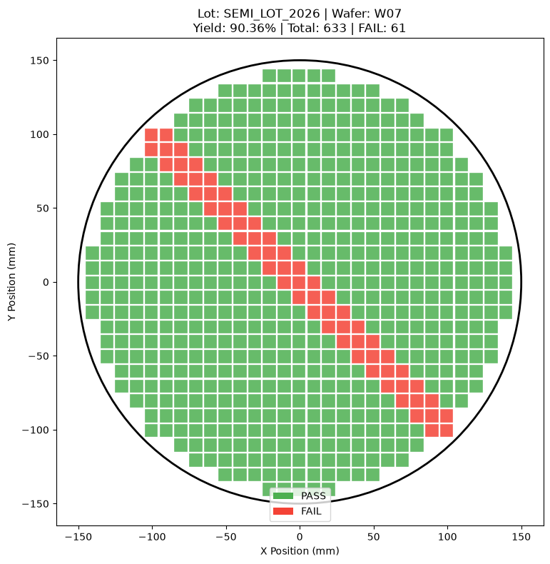

Center Defect Wafer Map

결과 해석 · 공정 관점
자동화 파이프라인에서 처리한 중심 결함 패턴의 시각화 결과입니다. 표준화된 형태의 결과는 Lot별 검토를 빠르게 만듭니다.
여러 Lot과 Wafer의 데이터를 자동으로 분석하여 Wafer Map 생성, 불량 패턴 분류, 수율 계산 및 PDF 리포트 저장까지 연결한 배치 자동화 프로젝트입니다.
실제 반도체 제조 환경에서는 하루에도 많은 Lot과 Wafer가 처리되므로 각 Wafer Map을 사람이 하나씩 확인하고 리포트를 작성하는 방식에는 시간적인 한계가 있습니다.
Lot ID와 Defect Mode를 리스트 형태로 입력하여 여러 Lot을 반복문으로 순차 처리하도록 구성했습니다.
이를 통해 Lot마다 동일한 분석 코드를 반복 실행할 필요 없이 한 번의 함수 호출로 여러 Wafer를 처리할 수 있습니다.
각 Lot에서 설정된 Wafer 수만큼 샘플 데이터를 생성하고 Ring, Center, Scratch, Random 등의 불량 패턴을 적용하도록 구성했습니다.
생성된 Wafer DataFrame을 패턴 분류 함수에 전달하여 Wafer별 불량 패턴과 Yield를 자동으로 분석하도록 연결했습니다.
개별 Wafer의 Yield를 저장한 뒤 Lot 단위 평균 Yield를 자동 계산하여 리포트 하단에 표시하도록 구현했습니다.
Matplotlib의 PdfPages를 사용하여 표지 페이지와 Lot별 Wafer Map 페이지를 하나의 PDF 파일로 자동 저장하도록 구현했습니다.
Wafer별 분석 → 시각화 → 수율 계산 → PDF 저장 과정을 하나의 함수로 연결하여 반복적인 수작업을 줄였습니다.
개별 Wafer 결과뿐 아니라 여러 Wafer의 Yield를 Lot 단위로 집계하여 공정 상태를 한 번에 비교할 수 있도록 구성했습니다.
분석 결과를 화면 출력으로 끝내지 않고 실제 공유 가능한 PDF 형태로 저장하여 분석부터 보고서 생성까지 연결했습니다.
실제 환경에서는 샘플 데이터 생성 부분을 MES, 검사 장비 또는 공정 데이터베이스에서 가져온 실제 Wafer 데이터로 교체할 수 있습니다.
Lot 평균 Yield가 특정 기준 이하로 내려가는 경우 자동으로 Warning을 표시하거나 이상 Lot 목록을 별도로 생성하는 구조로 확장할 수 있습니다.
자동 분류된 Ring, Center, Scratch 등의 패턴을 Tool, Chamber, Recipe 및 공정 이력과 연결하면 Root Cause Analysis의 우선순위를 정하는 데 활용할 수 있습니다.
Wafer 분석 및 PDF 리포트 자동화 코드는 GitHub Jupyter Notebook에서 확인할 수 있습니다.
View Notebook on GitHub →Wafer 분석 자동화 파이프라인의 실제 실행 결과입니다.
실제 분석 결과 보기 →아래 그래프는 해당 Python 노트북에서 실제 실행되어 저장된 출력입니다.
결과 해석 · 공정 관점
자동화 파이프라인에서 처리한 중심 결함 패턴의 시각화 결과입니다. 표준화된 형태의 결과는 Lot별 검토를 빠르게 만듭니다.

결과 해석 · 공정 관점
자동화 파이프라인에서 처리한 Scratch 패턴의 시각화 결과입니다. 반복되는 선형 패턴은 장비·이송 조건 점검으로 연결할 수 있습니다.

결과 해석 · 공정 관점
자동화 파이프라인에서 처리한 Random 패턴의 시각화 결과입니다. 산발적인 결함은 시간 및 Lot 이력과 함께 재검토해야 합니다.

결과 해석 · 공정 관점
패턴별 수율 비교를 자동 리포트에 포함한 결과입니다. 시각화와 요약 지표를 함께 제공하면 이상 Lot의 우선순위를 정하기 쉬워집니다.